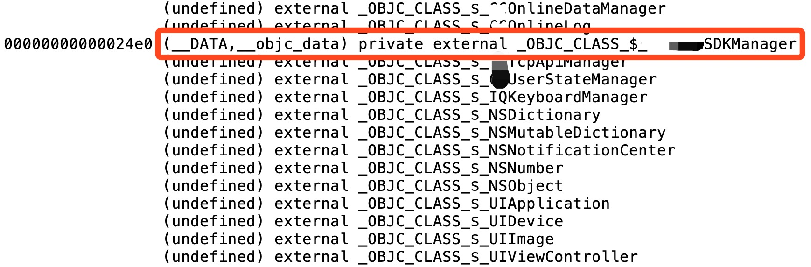

最近把楼下部门提供的 SDK 从主工程抽离到私有源上，将其链接到一个动态库中再被主工程所用。目的是为了转移 main executable 的 TEXT 段的体积到动态库中去（兼容 iOS 8 的痛）。在抽离代码、分析依赖、建 podspec、上传私有源等一顿操作猛如虎后，启动时 dyld 报 symbol not found 的错误。这就很郁闷了。
通过 $nm -m sdk.a 输出静态库中符号的类型，搜索找不到的类，实锤符号被「隐藏」的事实：

private external 这个看起来矛盾的描述，表示的是仅对「包含」此符号的目标文件而言是external的。也就是为什么当这个类被链接到动态库之后，在 main executable 无法找到的原因，因为使用方和提供方被分割成为了两个目标文件了。至于为什么错误被推迟到了运行时，而没在静态链接的时候报错，原因是项目不知道啥时候加了 -Wl,-undefined,dynamic_lookup 这些 linker flag.
限制符号可见是有好处的，减少发生链接冲突的可能性、减少链接器的工作量。但是上面这个 case 的符号导出设置不太合理的，因为它作为一个 SDK 假定了自己会被链接到 main executable 中而非其他二进制中（比如动态库）。那要怎么 fix 这个问题呢？有以下几种方式：
原本是打算实施方案 3 的，结果运行起来还是出现了 crash，看了下反汇编是使用了 +mainBundle 方法去获得 framework 资源失败而后对实际为 NULL 的NSError **解引用导致。这个坑估计输出过 framework 的人应该都踩过，此处使用 +bundleForClass: 更加安全。所以只能实施方案 1 啦。
借机梳理下控制符号可见性的姿势，免得以后输出二进制的时候犯类似的错误。先看源码层面的：
static关键字是最常用的控制方式了，将变量的作用域限定在定义它的编译单元中，禁止所有的外部链接，连private external都不是，直接不出现在符号表中，减小输出二进制体积；__attribute__((visibility("hidden"))) 声明函数或者变量，可以实现private external。链接层面的方式：
$clang -dynamiclib foo.c -unexported_symbols_list list_you_created-fvisibility=hidden 参数，也可是实现 private external。 考虑更多的时候使用的是 Xcode 的 Build Settings，也要整理下：
值得注意的是， debug build 一般默认会开启 Enable Testability 的构建选项，这会导致原本private external的符号暴露出去用于自动化测试，使得上面提及的链接层面的手段无效。
— Jun 10, 2020